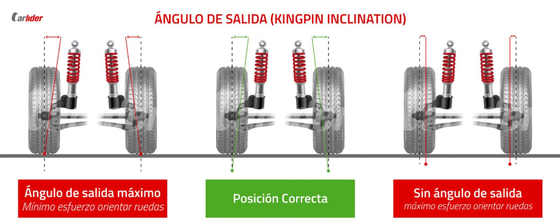
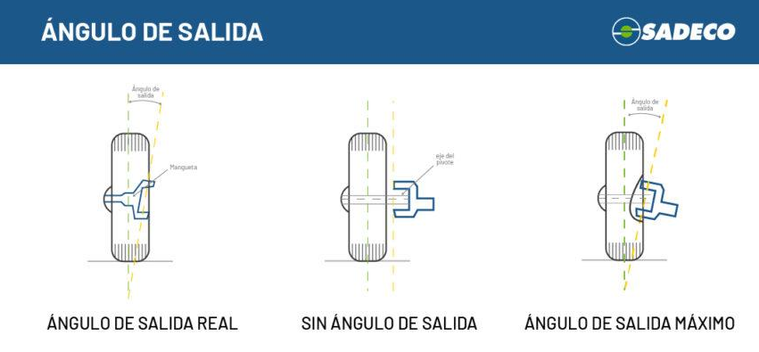

Salida o kinping
La salida, también conocida como ángulo kingpin o inclinación del eje de pivote de dirección (SAI, Steering Axis Inclination), es uno de los parámetros fundamentales de la geometría de dirección de un vehículo. Este ángulo representa la inclinación del eje sobre el que gira la rueda respecto a una línea vertical, observándolo desde la parte frontal del automóvil.

El eje de giro no suele ser completamente vertical, sino que está ligeramente inclinado hacia el centro del vehículo. Esta inclinación se forma mediante la posición de los elementos de suspensión y dirección, como las rótulas o el amortiguador tipo McPherson.
Función del ángulo de salida
La principal función del ángulo de salida es mejorar el comportamiento de la dirección y facilitar el manejo del vehículo. Gracias a esta inclinación:
- Se reduce el esfuerzo necesario para girar el volante.
- La dirección resulta más suave y estable.
- Las ruedas tienden a volver automáticamente a la posición recta después de un giro.
- Se mejora la estabilidad y el control durante la conducción.
Este efecto de autocentrado es especialmente importante en curvas y maniobras, ya que ayuda al conductor a mantener el control del vehículo con mayor facilidad.
Cómo actúa el ángulo kingpin
Cuando las ruedas giran, la inclinación del eje de pivote provoca una ligera elevación del vehículo. El peso del automóvil tiende entonces a devolver las ruedas a la posición central, generando el efecto de retorno del volante.
Además, este ángulo ayuda a reducir el llamado radio de pivotamiento, es decir, la distancia entre el punto donde el eje de dirección toca el suelo y el centro de contacto del neumático. Esto disminuye vibraciones y mejora la precisión de la dirección.
Ventajas de una correcta salida
Un ajuste adecuado del ángulo kingpin proporciona:
- Mayor estabilidad en línea recta.
- Mejor respuesta de la dirección.
- Menor esfuerzo de conducción.
- Menor desgaste de componentes de suspensión y neumáticos.
- Más seguridad y confort al conducir.
Problemas por desajuste
Si el ángulo de salida está fuera de especificación debido a golpes, deformaciones en la suspensión o desgaste de componentes:
- El vehículo puede desviarse hacia un lado.
- La dirección puede sentirse dura o inestable.
- El volante puede no regresar correctamente al centro.
- Puede aparecer desgaste irregular en los neumáticos.
Por esta razón, la salida o kingpin se revisa dentro de los procesos de alineación y diagnóstico de la geometría del vehículo, especialmente después de accidentes o reparaciones de suspensión y dirección.
